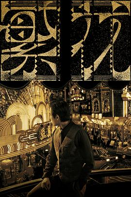

2023年12月
11 条
其中 10 条带正文
广播发布后不可编辑，所以每条都是那一刻的原话。
2023-12-30 15:09:22
看过 一闪一闪亮星星 ★★★☆☆
田导演得是真好。看得出来导演对画面有他自己独特的考究。故事还是套路，可惜。
2023-12-28 12:38:53
 读过 银河边缘009：时空画师 ★★★☆☆
读过 银河边缘009：时空画师 ★★★☆☆
还彳亍。
2023-12-27 22:19:30

地道。我差点没看出来是墨镜的作品。
2023-12-24 14:53:47
 在看 葬送的芙莉莲 / 葬送のフリーレン ★★★★★
在看 葬送的芙莉莲 / 葬送のフリーレン ★★★★★
摄影很有纪录片的意思。
2023-12-18 11:55:52
想看 繁花
2023-12-17 15:01:26
看过 杀手没有假期 / In Bruges ★★★★☆
我本以为真的是喜剧的。
2023-12-10 15:04:05
看过 燃冬 ★★★★☆
影像风格统一，把冷拍得很拧巴。
2023-12-09 22:08:50
看过 93国际列车大劫案：莫斯科行动 ★★★☆☆
节奏太快了，背景有点粗糙。黑豹的两首单曲不得不说窦唯唱得真好。
2023-12-09 09:13:42
 听过 安眠豆腐 ★★★★★
听过 安眠豆腐 ★★★★★
喜欢月亮的光辉。
2023-12-05 23:40:55
看过 向往的生活 第一季 ★★★★☆
至今还会唱《心火烧》。
2023-12-02 20:23:26
看过 特写 / کلوزآپ ★★★★☆
对社会弊病的指出。白袜子的破洞。现实与故事的模糊。很大的信息密度。